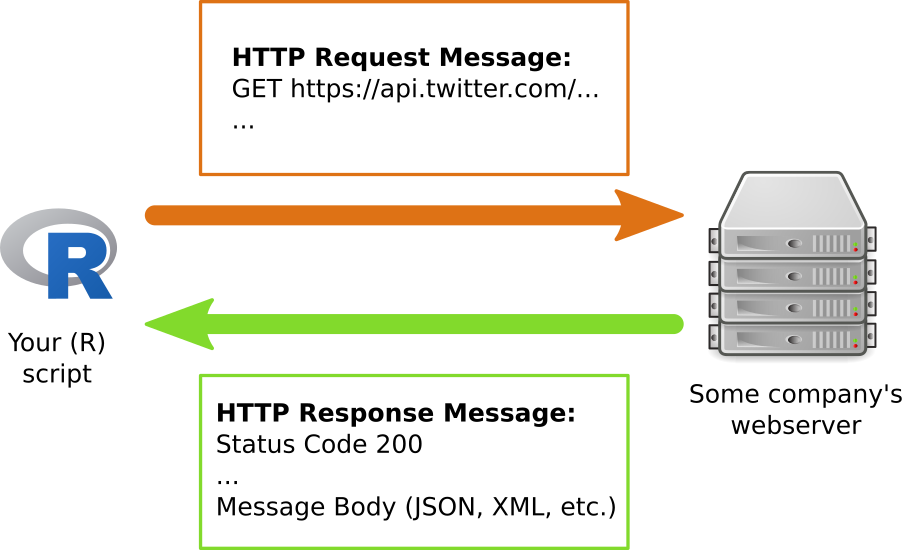

Text as Data: Week 4
Matthias Haber
29 September 2021
Goals for Today
Goals
- Finish web scraping
- Introduction to tidy data and tidy text
APIs
- API stands for Application Programming Interface
- defined interface for communication between software components
- Web API: provides an interface to structured data from a web service
- APIs should be used whenever you need to automatically collect mass data from the web
- it should definitely be preferred over web scraping
Functionality of APIs
Web APIs usually employ a client-server model. The client – that is you. The server provides the API endpoints as URLs.

Functionality of APIs
Communication is done with request and response messages over Hypertext transfer protocol (HTTP).
Each HTTP message contains a header (message meta data) and a message body (the actual content). The three-digit HTTP status code plays an important role:
- 2xx: Success
- 4xx: Client error (incl. the popular 404: Not found or 403: Forbidden)
- 5xx: Server error
- The message body contains the requested data in a specific format, often JSON or XML.
Examples of popular APIs
Social media:
- Facebook Graph API (restricted to own account and public pages)
- YouTube (Google)
- For more, see programmableweb.com.
API wrapper packages
- Working with a web API involves:
- constructing request messages
- parsing result messages
- handling errors
- For popular web services there are already “API wrapper packages” in R:
- implement communication with the server
- provide direct access to the data via R functions
- examples: rtweet, ggmap (geocoding via Google Maps), wikipediR, etc.
Twitter has two types of APIs
REST APIs –> reading/writing/following/etc.
Streaming APIs –> low latency access to 1% of global stream - public, user and site streams
authentication via OAuth
documentation at https://dev.twitter.com/overview/documentation
Accessing the Twitter APIs
To access the REST and streaming APIs, all you need is a Twitter account and you can be up in running in minutes!
Simply send a request to Twitter’s API (with a function like
search_tweets()) during an interactive session of R, authorize the embeddedrstats2twitterapp (approve the browser popup), and your token will be created and saved/stored (for future sessions) for you!You can obtain a developer account to get more stability and permissions.
Use twitter in R
library(rtweet)
## search for 1000 tweets using the #baerbock hashtag
tweets <- search_tweets(
"#baerbock", n = 1000, include_rts = FALSE
)Find out what else you can do with the rtweet package: https://github.com/mkearney/rtweet
Homework Exercise
We are still interested in getting data from abgeordnetenwatch.de. The site has an API, so technically there is no need to scrape anything. Load the package
jsonliteinto library.Go to https://www.abgeordnetenwatch.de/api and figure our the syntax of their APIs.
Collect some data from their API from a politician running in your constituency (or a constituency of your choice). Tip: Use the
fromJSONfunction injsonliteto load a JSON file via the API into R. Convert the output into a nicely formatted dataframe.
Tidy data
Tidy data
In tidy data:
- Each variable forms a column
- Each observation forms a row
- Each type of observational unit forms a table

- Any dataset that doesn’t satisfy these conditions is considered ‘messy’
gather() and spread()
- The two most important functions in
tidyraregather()andspread(). tidyrbuilds on the idea of a key value pair. A key that explains what the information describes, and a value that contains the actual information (e.g. Password: 0123456789).gather()makes wide tables narrower and longer;spread()makes long tables shorter and wider.
gather()
Problem: Column names are not names of a variable, but values
Goal: Gather the non-variable volumns into a two-column key-value pair
gather()
Three parameters:
Set of columns that represent values, not variables
The name of the variable whose values form the column names
key.The name of the variable whose values are spread over the cells
value.
gather()
## Species obs measurement value
## 1 setosa 1 Sepal.Length 5.1
## 2 setosa 2 Sepal.Length 4.9
## 3 setosa 3 Sepal.Length 4.7
## 4 setosa 4 Sepal.Length 4.6
## 5 setosa 5 Sepal.Length 5.0
## 6 setosa 6 Sepal.Length 5.4spread()
Spreading is the opposite of gathering. You use it when an observation is scattered across multiple rows.
spread()turns a pair of key:value columns into a set of tidy columns.We only need two parameters:
- The column that contains variable names, the
keycolumn. - The column that contains values forms multiple variables, the
valuecolumn.
- The column that contains variable names, the

spread()
iris %>%
mutate(obs = 1:n()) %>%
gather(measurement, value, Sepal.Length:Petal.Width) %>%
tidyr::spread(key = measurement, value = value) %>%
head()## Species obs Petal.Length Petal.Width Sepal.Length Sepal.Width
## 1 setosa 1 1.4 0.2 5.1 3.5
## 2 setosa 2 1.4 0.2 4.9 3.0
## 3 setosa 3 1.3 0.2 4.7 3.2
## 4 setosa 4 1.5 0.2 4.6 3.1
## 5 setosa 5 1.4 0.2 5.0 3.6
## 6 setosa 6 1.7 0.4 5.4 3.9Further functions: separate()
separate() pulls apart one column into multiple columns, by splitting wherever a separator character appears. separate() takes the name of the column to separate, and the names of the columns to separate into.

Further functions: unite()
unite() is the inverse of separate(): it combines multiple columns into a single column. You’ll need it much less frequently than separate(), but it’s still a useful tool to have in your back pocket.
Exercise
Tidy the simple tibble below. Do you need to make it wider or longer? What are the variables?
## # A tibble: 2 × 3
## pregnant male female
## <chr> <dbl> <dbl>
## 1 yes NA 10
## 2 no 20 12Tidy text
Tidy text
- Following the principle of the tidy data structure, tidy text is a table with one-token-per-row
- A token in each row can be a single word, an n-gram, a sentence, etc.
- Tidy data sets can be manipulated with the standard tidy tools (dplyr, tidyr, ggplot2, etc.)
Tidy text flowchart

A tidy text example
text <- c("Because I could not stop for Death -",
"He kindly stopped for me -",
"The Carriage held but just Ourselves -",
"and Immortality")
text## [1] "Because I could not stop for Death -"
## [2] "He kindly stopped for me -"
## [3] "The Carriage held but just Ourselves -"
## [4] "and Immortality"A tidy text example
## # A tibble: 4 × 2
## line text
## <int> <chr>
## 1 1 Because I could not stop for Death -
## 2 2 He kindly stopped for me -
## 3 3 The Carriage held but just Ourselves -
## 4 4 and Immortality- Does that data frame already contain tidy text?
Breaking text into tokens
## # A tibble: 20 × 2
## line word
## <int> <chr>
## 1 1 because
## 2 1 i
## 3 1 could
## 4 1 not
## 5 1 stop
## 6 1 for
## 7 1 death
## 8 2 he
## 9 2 kindly
## 10 2 stopped
## 11 2 for
## 12 2 me
## 13 3 the
## 14 3 carriage
## 15 3 held
## 16 3 but
## 17 3 just
## 18 3 ourselves
## 19 4 and
## 20 4 immortalityTidying Jane Austen: create data frame
library(janeaustenr)
original_books <- austen_books() %>%
group_by(book) %>%
mutate(linenumber = row_number()) %>%
ungroup()
original_books## # A tibble: 73,422 × 3
## text book linenumber
## <chr> <fct> <int>
## 1 "SENSE AND SENSIBILITY" Sense & Sensibility 1
## 2 "" Sense & Sensibility 2
## 3 "by Jane Austen" Sense & Sensibility 3
## 4 "" Sense & Sensibility 4
## 5 "(1811)" Sense & Sensibility 5
## 6 "" Sense & Sensibility 6
## 7 "" Sense & Sensibility 7
## 8 "" Sense & Sensibility 8
## 9 "" Sense & Sensibility 9
## 10 "CHAPTER 1" Sense & Sensibility 10
## # … with 73,412 more rowsTidying Jane Austen: unnest tokens
## # A tibble: 725,055 × 3
## book linenumber word
## <fct> <int> <chr>
## 1 Sense & Sensibility 1 sense
## 2 Sense & Sensibility 1 and
## 3 Sense & Sensibility 1 sensibility
## 4 Sense & Sensibility 3 by
## 5 Sense & Sensibility 3 jane
## 6 Sense & Sensibility 3 austen
## 7 Sense & Sensibility 5 1811
## 8 Sense & Sensibility 10 chapter
## 9 Sense & Sensibility 10 1
## 10 Sense & Sensibility 13 the
## # … with 725,045 more rowsTidying Jane Austen: remove stopwords and count words
data("stop_words")
tidy_books <- original_books %>%
unnest_tokens(word, text) %>%
anti_join(stop_words)
tidy_books %>%
count(word, sort = TRUE)## # A tibble: 13,914 × 2
## word n
## <chr> <int>
## 1 miss 1855
## 2 time 1337
## 3 fanny 862
## 4 dear 822
## 5 lady 817
## 6 sir 806
## 7 day 797
## 8 emma 787
## 9 sister 727
## 10 house 699
## # … with 13,904 more rowsExcersise
Install and load the package gutenbergR and find out the gutenberg_id of “Treasure Island” by Robert Louis Stevenson. Replace ID with the correct id in the following function:
and save the book in an object. Tidy the text and create a plot that shows all the words that appear more than 50 times.
Wrapping up
Questions?
Outlook for our next session
- Next week we will look at string manipulation with regular expressions
That’s it for today
Thanks for your attention!